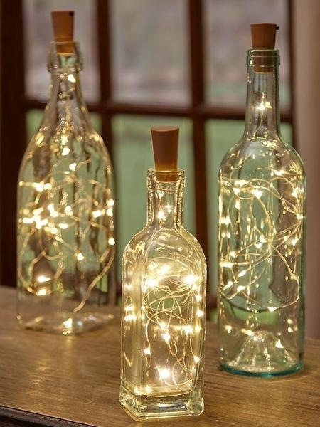
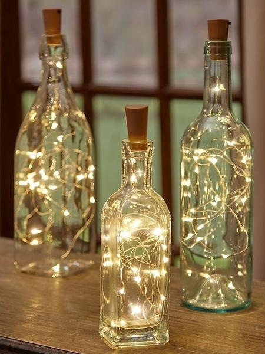

O que é Upcycling?
O upcycling não é uma prática nova, e inclusive, é muito comum em tempos economicamente incertos. Nos últimos tempos, no entanto, tem ganhado novo fôlego, graças ás técnicas sustentáveis e ambientalmente correta que promove. O upcycling consiste, basicamente, em dar um novo propósito a materiais que seriam descartados. Isso tudo com criatividade e qualidade igual ou até melhor que a do produto original.
MELHORES IDEIAS DE ARTESANATOS PARA FAZER EM CASA
 
